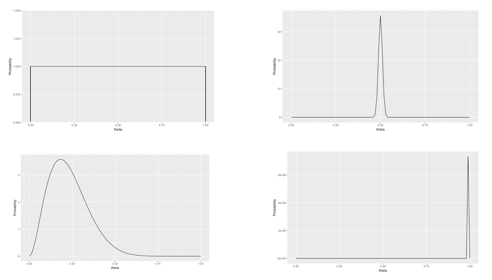
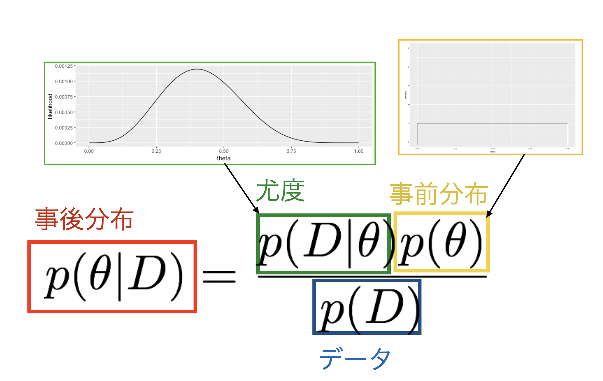
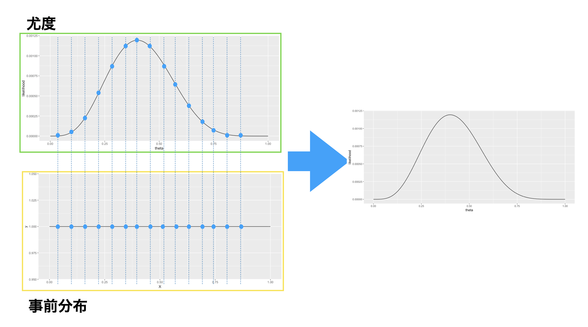
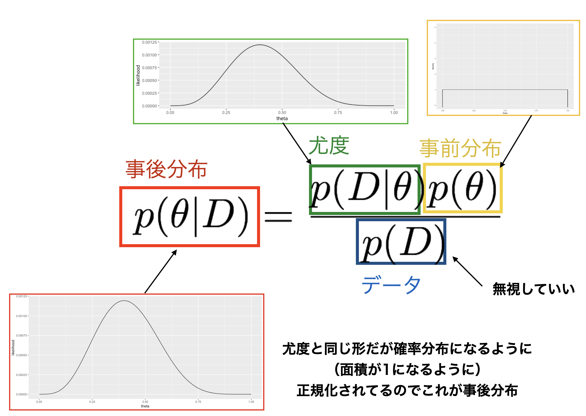
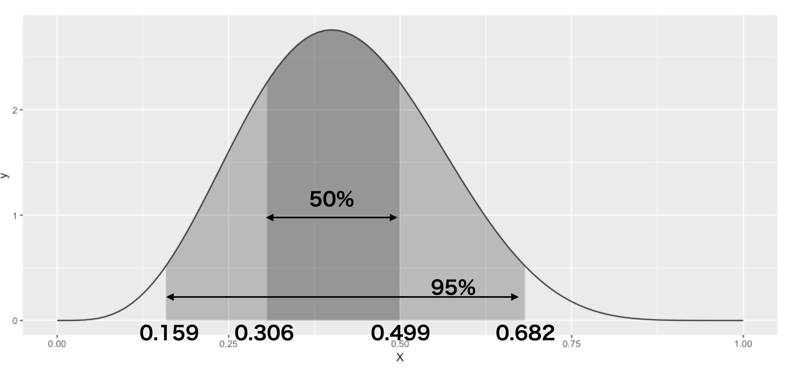
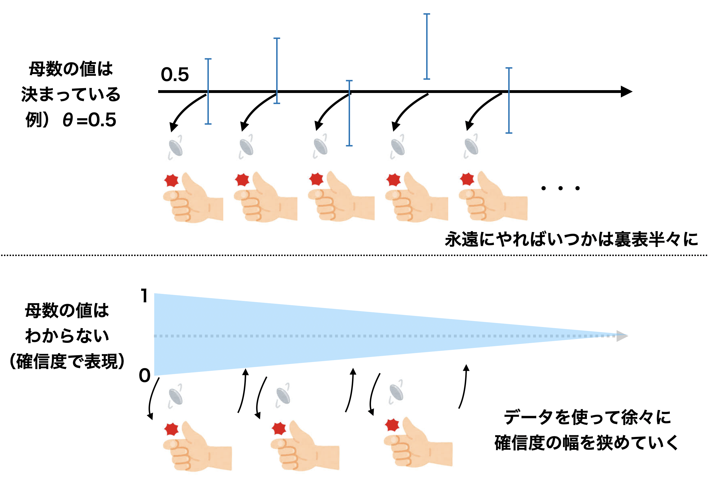
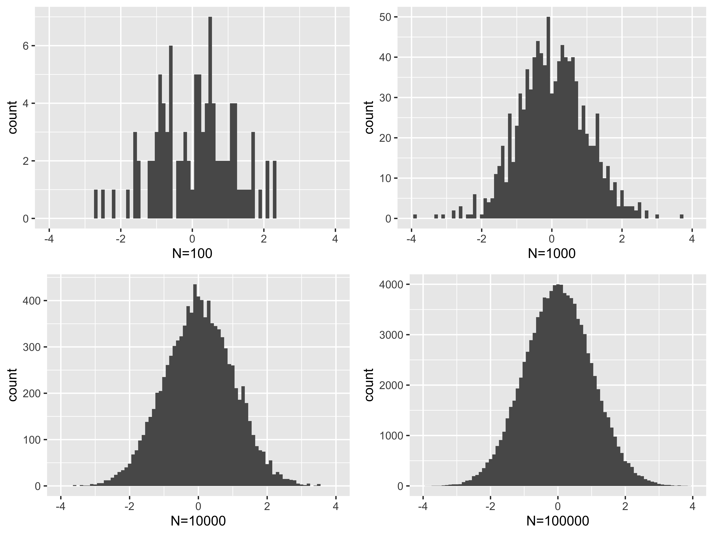

Chapter 18 ベイズ法による母数の推定
母数を推定する第三の方法として，ベイズ法による推定を考えます。ベイズ法の利点は，尤度関数を確率分布関数に変えてくれることであり，推定値の確からしさを確率で表現できる点でもあります。また，これらの推定方法で統計的推定や，実際の統計モデルでどのように用いられるかを考えます。こうした計算を容易にしたのが確率的プログラミング言語の発展であり，確率分布を乱数によって近似するという方法(MCMC法)であることにも言及します。
18.1 ベイズの定理・再考
前回は最尤法による推定の説明を行い，最後にベイズ法の入り口であるベイズの定理について説明しました。ここでは復習も兼ねて，これらの関係を改めて見直してみたいと思います。
まずベイズの定理ですが，形としては次のようなものでした。 \[P(A|B) = \frac{P(B|A)P(A)}{P(B)}\] ここで\(P()\)で表されているのは確率，とだけ言っていましたが，これは離散でも連続でも同じことですので，確率分布と呼びましょう。とくに左辺は「結果的にこうなる」という意味ですから，と呼ばれます。
この確率的関係(右辺も左辺も全部Pで囲われています！)を，実際に統計的推論の場面で用いることを考えます。左辺にある事後分布は，データをとったうえで，パラメータがどのあたりにあるのかを推論するということを条件付き確率で表しています。つまり，BがデータでAがパラメータ，事後分布\(P(A|B)\)が「データをとった上でのパラメータの確率」ということです。であれば，右辺にある\(P(B|A)\)は「パラメータがあった時にデータが出てくる確率」を意味することになります。これってなんでしたっけ？ そう，ですね！
さて記号の意味を考えていきますと，\(P(A)\)はデータを取る前のパラメータの確率，ということになります。これはデータを取る前の確率なので，といいます。事前の確率ってなんだ，データを取る前にわかっているのか？ とか思いますが，これについては後でまた説明を足しますので，いったん次にいきましょう。
また\(P(B)\)はデータの確率，ということになります。データの確率？ データが得られるかどうかの確率？ というのはわかるはずがないような気もしますが，前回の乳がんの罹患率の例を思い出すと「あり得るパラメータから考えられる全てのデータが出てくる確率をかき集めたもの」，というようなイメージができるかもしれません。用語としてはといいますが，実践上はこれについて深く考えなくてもよいものであることを後で説明します。のでこれについても話はここまで151。
今，言葉で表現したものでベイズの定理を書き変えてみます。 \[\mbox{事後分布} = \mbox{尤度} \times \frac{事前分布}{周辺尤度}\] ここにあるように，尤度に何かをかけた結果，左辺が分布になっている，ということに注目してください。前回，尤度は確率ではないという話をしました。尤度関数の面積(積分)が1.0にならないので，確率にならないのです。ですがこの式は，その尤度に事前分布をかけて，周辺尤度で割って，事後分布を得ています。事後分布は確率分布です。つまり，尤度を確率にしてくれるのがベイズの定理だ，と思っていただいて構いません。
尤度が確率に変わったら何が嬉しいのでしょう？ また事前分布ってなんでしょう？ これさえわかれば，新しい母数の推定方法が見えてきます。
18.1.1 事前分布
先に事前分布の説明から進めたいと思います。
事前分布は，確率のパラメータについて事前に与える分布です。パラメータがどれぐらいになるのか知りたいのに，事前に何かわかっていることがあるっておかしくない？ と思う人もいるかもしれません。
ベイズの式の各項は，確率で表現されています。確率と呼ばれる数字については第\[chapter6\]講を思い出して欲しいのですが，条件が3つあって，
確率の値は非負
-
全標本空間における全ての事象の確率の合計が1.0
-
任意の2つの相互に排他的な事象について，どちらか一方が発生する確率は個々の確率の和
ということでした。そしてこの条件が満たされているのであれば，それはなんでも確率と思って計算できるということでした。
皆さんが高校までの数学で習う確率は，「全パターンを数え上げて割合を答える」というようなものだったかと思います。これは的確率といわれ，無限につながる数列の極限として確率を考えるものでした。これに対し，降水確率など信念の強さを表す数字であっても，上の条件が満たされていればそれは確率なのでした。こちらの確率の考え方を，あるいは的確率，と読んでおくことにしましょう152。
さてこの自分の信念，考え方の確からしさをも確率で表現することを考えます。第\[chapter6\]講で示したように，推論とは確率の再分配であり，「他に可能性がない」のであれば100%確からしい，と言えるのです。逆に「事前にパラメータがどのあたりにあるのかなんて，全くわからない」という場合も，確率で表現しなければなりません。この表現方法として，「どこ」にあるのかわからないのであれば「全部あり得る」と広く広く守備範囲を広げておけば良いことになりますね。確率なので面積は1.0でなければなりませんが，その分うすく伸ばすように考えれば良いのです。

コイントスの出目についての四つの信念
図1.1に，4つの確率分布を示しました。これらはベルヌーイ分布のパラメータ\(\theta\)についての，個人の考え方を示していると思ってください。ベルヌーイ分布はコイントスのような，二値の結果を生じさせる試行についての確率分布ですから，確率\(\theta\)は\(0 \le \theta \le 1\)の範囲にあるはずです。 図1.1の左上は範囲全てにわたってフラットです。つまり，「どこ」にあるとも断言できない，どこにも同じ程度にあるはずだという信念で，言い方を変えると何もはっきりとは言えない，つまりわからない状態を表しています。データを分析するにあたって，事前に何もわからないのであれば，このようにフラットな事前分布(とくにといいます)を置けばよく，こういう事前分布の置き方をとくにと呼びます。 図1.1の右上は逆に，\(\theta=0.5\)のあたりにあるはずだ，と思っている人の考え方です。少なくとも0.45，大きくとも0.55ぐらいでしょう，ということなので，かなり確信度の高い(確率分布の幅が狭い)状態にあると言えます。 そこまではっきりわからないけど，でもちょっと裏が出やすそうだなあ，というふんわりと低めの予想をしている人は，図1.1の左下のような信念をもっている，と表現できますし，「絶対に表が出る。面しか出ない」と強く信じている人は図1.1の右下のようになります。
このように，全くわからないことや，どこかに特定の強い思い入れがあること，あるいはなんとなくこの辺じゃないかと思っていること，など事前の情報を確率分布として表現することは可能なのです。研究の実践場面において，事前に何かわかっていることが「全くない」のであれば，一様分布のような無情報事前分布，あるいはすごく幅の広い弱情報事前分布を置けば良いでしょう。身長や体重などのデータを分析する時に，正規分布を仮定しますが，このような場合は少なくとも負の値をとることはありませんし，いくら背が高い，体重が重いとしても10mや5tになったりするはずはないので，\(0\le \mu \le 100000\)のような幅で事前分布をおいても構いません。
あるいは先行研究などから，ある程度のアタリがつけられるのであれば，その値を中心にふんわりした事前分布を置いたっていいのです。逆にいうと，このように事前分布をおくことで，先行研究との一貫性を持たせたり，先行研究の情報を活用して知見を積み重ねていくことができる，とも言えます。
18.2 ベイズ法によるパラメータの推定
ではベイズ法で，実際にパラメータを推定する例を考えてみましょう。 難易度が同じぐらいの10問のテストを受けたとします。推定したいのは回答者の学力。この能力は，問題に正しく答える比率\(\theta\)である，と定義します。学力\(\theta\)は直接観測できず，観測できるのは「正答数」だけです。今回ある回答者が4問正解したとして，学力はどうやって見積もれば良いでしょうか？ というのがここでの課題になります。
ベイズ法による考え方は，基本的にたった2つのステップからなります153。
-
不確実性，信念の強さを確率によって数量化する(事前分布priorの設定)
-
観測データを使って事前の情報/信念を更新し，事後の情報/信念(事後分布posterior)にアップデートする
これだけです。
ではまずステップ1，事前確率を考えてみましょう。 この受験生の学力がどれぐらいなのか，事前に全くわかっていなかったとします。しかし正答率をかんがえるのですから，推定値は\(0 \le \theta \le 1\)の範囲にあるはず。全くわかっていないのですから，この範囲の一様分布を設定しましょう。
次にステップ2ですね。アップデートです。アップデートにはベイズの定理を使います。 ベイズの定理は事後分布=\(\frac{\mbox{尤度}\times \mbox{事前分布}}{\mbox{周辺尤度}}\)で，今回の尤度は4問正解した，つまり(順番は分かりませんが)正答,正答,正答,正答,誤答,誤答,誤答,誤答,誤答,誤答，というような状況です。ベルヌーイ分布ですから，尤度は\(\theta^4(1-\theta)^6\)ということになります。

ベイズ推定の実際
分子が確率と確率の掛け算になっているので，イメージしにくいかもしれません。私個人のイメージでは，波の衝突のような感じだと思っています。X軸に沿って細かく数字を切り出して，逐一掛け合わせていくような方法のイメージでも良いかもしれません(図1.3)。ちなみに，事前分布が今回一様分布ですので，尤度と組み合わせたところ，その高さは変わりますが形Shapeは変化しません。このように，事前分布を一様分布にしておくと，データと確率分布の関係，尤度の形をそのまま結果に反映させることができることになります。

確率同士の掛け合わせ
さて，この掛け合わせた結果を\(P(D)\)，つまりデータの確率で割らないといけないのですが，ここは無視してしまいましょう。というのも，この分母が何をやっているかを考えれば，パラメータのような変わる数(変数)が含まれていないのでここは「定数」になっていることがわかります。分子のところは尤度と事前分布を掛け合わせたものですから，数字はすごく小さいのものになっているのでしょうが，最終的に左辺は事後分布という名の確率分布です。つまり，左辺は面積が1.0に規格化されており，分母は面積を1.0にするための，割り算用の定数に過ぎないということがわかります。我々はパラメータがどのあたりにあるのかが知りたいのですが，「ここにありそう」というのはそこの確率が高そうだ，ということであって，形さえわかれば縦軸の単位は別に詳しくわからなくても，横軸の位置を推測するのに苦労はない訳です。そういうわけで，分母は無視しちゃいましょう154。この「形がわかればいい」というのを数学的に表すと， \[P(\mbox{事後分布}) \propto \mbox{尤度}\times \mbox{事前分布}\] となります。\(\propto\)というのは，相似形である，という意味です。
さて，図1.4にあるように，事後分布が計算できました。これが\(\theta\)の推定結果ということになります。

事後分布が計算できました
18.3 確率の考え方と統計的推論
このように計算するのがベイズ法による推定方法です。
と言われても，ピンと来ないかもしれません。図1.4に示されているように，ベイズ法は推定結果も事後分布＝確率分布として得られます。モーメント法や最尤法は，\(\theta\)の値がXXXです！と答えを出してはくれるのですが，ベイズ推定の場合は答えが「分布」で出ていますから，1つの値にして回答を出すことができないのです。この分布全部が答えであり，事前分布の解釈のように「この辺りにありそうだ」という信念の強さを表しているとも言えます。
分布全体を見ながら「ふむふむ」でもいいのですが，もちろん1つの数字にすることは可能です。これこそこの授業の最初の方(第\[chapter3\]講)でやった，記述統計の得意とするところなのですから。たとえばこの分布関数のピーク，記述統計でいうところの最頻値を考えると，これは最も確率が高いところなので，最も尤もらしい，つまり最尤推定値と考えることができます。ちなみにこの関数の最尤推定値はということでと言われます。また，確率関数の期待値を代表値とすることもできて，それはExpectation A Posteriorということで，と呼ばれます。またこの関数は左に歪んでいますから，平均値であるEAPはあまり代表値として相応しくないため，中央値をつかってMEDian a posteriorということでを使ったほうがいいかもしれません。
ちなみに今回のこの関数のピーク，MAP推定値は\(\theta=0.4\)です。0.4になる確率が最も高いのですね。
・・・なんだこれ，と思ったかもしれません。10問中4問正解だから0.4なのは当たり前じゃないか，ということだと思うのですが，繰り返しになりますがそれは標本平均値を使ったモーメント法の答え。尤度関数と事後分布の形が同じなので，最尤推定の結果も0.4になります。が最尤推定の場合は0.4になる「確率が最も高い」とは言えません。尤度関数は確率ではないからで，0.4になるのが最も尤もらしい，というに止まります。ベイズ推定の場合は，(事後分布が)0.4になる確率が最も高いといっても構いません。大事なのは，どの方法をとっても同じような答えが出るということです。同じデータで，同じ母数を推定しているのですから，筋道は違えど答えは同じということです。それよりも，各推定法の道のりの違い，表現の違い，どういうことが言えるかといった違いをしっかり踏まえておいてください。
ベイズ法の場合は確率的な答えになっていますから，表現しやすい利点があります。たとえばMAP推定値は0.4ですが，図1.5にあるように，「\(\theta\)の値が0.306から0.499の間に入っている確率が50%」だとか，「95%の確率で\(\theta\)が0.159から0.682の間に分布している」という表現をできます。

事後分布による区間推定
この区間推定の方法は，モーメント法による信用区間のそれとは違うことに注意してください。モーメント法による推定は，標準誤差を使って推定し，「この区間の中にある」と断言して，この宣言が的中する確率が95%という意味です。実際には，あたっているかハズレているかの二択であり，基本的に点推定なのであるのに対し，こちらは基本的に区間推定で，逆に言えば「この区間の中にある」としか言えない，あるいは「この区間の中にある確信度が95%」というような意味になります。頻度主義的なに対し，ベイズ法によるこの区間はと呼んで区別します155。
主義や信念の対立で優劣を決めたいわけではないのですが，頻度主義的な発想とベイズ主義的な発想とでは，母数についての考え方が違っているのも事実です。頻度主義的な発想では，無限に試行を繰り返せばいつかは答えにたどり着くはずで，言い換えれば「真実はいつも1つ」なわけです。ただそれが直接わかり得ないから，徐々に近づいていくしかない。図1.6の上の段にあるように毎回の試行で信用区間をとって表現できますが，これは本当の値(図では0.5が真の値としています)を跨いでいるかどうか0/1の判定が続くわけです。
これに対して主観確率で考えるベイズ法による推定は，そもそも母数の値がわかりませんので，わからないことを確率で表現する。最初は幅の広い，全域に渡るような確率でぼんやり考えるのです。これに毎回の試行＝データを積み重ねることによって，この幅を狭めていき，「この辺にあるんじゃないかなあ」という確信度を高めていくという考え方です。

確率についての2つの考え方
ベイズ法による推定をするときに，真の値が定数としてただ1つ定まっている，と考えられるかどうかについては，とくに定まりがありません。母数は定数で定まっている，ただそれが確率的にしかわからないだけだという考え方をするのか，母数がそもそも確率的に分布していると考えるのか，いずれの考えであってもいいでしょう156。
現代的に，あるいは統計のユーザとしてはプラグマティックに「使い物になるほうが正しい考え方だ」という割り切り方をしても良いでしょう157。いずれにせよ，これらの手法によって表現されるものの意味の違いについて，少し注意しておいていただければと思います。
18.4 乱数による近似計算法
ベイズ法による推定は，ここ10年ほどで一気に広がりを見せました。トーマス・ベイズ牧師がベイズの定理を表したのが18世紀なのですが，21世紀に入るまではずっと活用されてこなかったのは何故でしょうか。そもそも，ベイズ牧師は逆確率の法則，つまり手元のデータから根源的な理由を探る確率，という発想がどこか間違っているのではないか(神の意思に反しているのではないか)と考え，公表したがらなかったということもありますし，分散分析を生み出したフィッシャーがベイズ主義的な考え方に反論して弾圧したこと，ベイズ統計学は暗号解読など軍事目的に使われていて業績が公表されなかったことなど，いくつかの理由は考えられます。が，そうしたネガティブな理由ではなく，積極的な理由をいうならば，「これまでは計算が難しくて実用的でなかった」からであり，「近年コンピュータ技術の発展により，実用的な計算方法が開発された」からであると言えるでしょう。その技術的なブレイクスルーこそ，MCMC(マルコフチェインモンテカルロMarcov Chain Monte Carlo法)と呼ばれるものです。
ベイズ統計学の実用上の難しさは，モデルが複雑になっていくときに「確率関数を複数組み合わせた計算」が手に負えないほど複雑になることに問題がありました。MCMC法が開発されるまでは，上手い組み合わせ方を見つけて計算しやすくなる確率分布を考えるとか，だいたいこの辺りにピークがあるだろうと思われる領域を狙って，細かく区間をメッシュ状に区切りとにかく計算しまくる，という方法だったのですが，それでも大変なことなのでした。
MCMC法は近似的な答えを探す1つの方法です。MCMCという名前は「マルコフ連鎖」と「モンテカルロ法」の2つのパートから出来上がっています。マルコフ連鎖は，目標となる確率分布状態になるような推移規則を作る方法であり，モンテカルロ法は乱数を発生させるアルゴリズムです。この2つが合体することで，確率分布の形がわからなくてもサンプルが得られるような，乱数発生器を作る方法，ということになります。
ベイズ統計のゴールは事後分布を作ることです。事前分布を一様分布にして，尤度はベルヌーイ分布にする，といった簡単な場合ですととくに問題ないのですが，ある確率分布のパラメータがあって，さらにそれを生成する確率分布があるといった，階層的に入れ子になっているようなモデルが出てくると，「最終的な事後分布の形がわからない」という状況になります。正規分布とかポアソン分布といった，名前がついている確率分布であればその特徴がはっきりわかるのですが，それらを組み合わせて作られるものは名もなき合成関数になり，どんな形状をしているのか，全く想像つかないことがあります。マルコフ連鎖を使うと，そのなもなき合成関数の形状をとにかく作り上げることができる，そんな数学的技術です。
モンテカルロ法は乱数発生技術です。乱数というのは規則性のない数ですが，これを作るのはなかなか難しいです。人間が0-9の数字を適当に書いていくと，知らず知らずのうちに均等でないパターンができてしまいます158。コンピュータに(たとえばRに)乱数があるじゃないか，と思われるかもしれませんが，コンピュータはあくまでも計算機でどこまでも合理的です。乱数によって動いているように見えますが，乱数に見えるような数字を生成するアルゴリズムがその中には埋め込まれていますから，正確には擬似乱数でしかありません。コンピュータの作る乱数は，もちろん人間が適当に思いつく乱数よりもより規則性が少ないですが，それでも基本的に
-
何らかの関数\(g\)によって，内部状態\(S_t\)をアップデートする；\(S_{t+1}=g(S_t)\)
-
内部状態\(S_t\)から何らかの関数\(h\)によって，実現値が生成される；\(x = h(S_t)\)
というステップを反復(\(t=1,2,3\ldots\))することで生成するのです。こうした乱数列ができれば，それを正規分布の形だとか二項分布の形に当てはめて出力することは簡単なのです。このステップ・バイ・ステップの計算法としてある確率分布に従う乱数発生技術があり，これがマルコフ過程とひっついてできたのがMCMC法ということになります159。
MCMC法は，ですから，どんな形の確率分布であっても乱数のサンプリングは生成できる，という技術なわけです。事後分布の関数の形，形状がわからなくてもそこからの乱数は作れるという技術であり，コンピュータ技術の性能が発展した今では大量の乱数を生成することも瞬時に行われます。
さて，確率分布をRで実行するところで皆さんもお感じになったかと思いますが，乱数は大量に発生させてそのヒストグラムを描くと，確率分布関数の形に近づいていきます。大量にあれば，確率分布関数がわからなくてもそのヒストグラムを描いて稜線を見れば，その確率分布関数の形が目に見えてきます。図1.7に，Rで正規乱数を発生させた例を示しました。乱数が100個しかない場合(図の左上)，そのヒストグラムを見ても何だかギザギザしていますが，1000個(右上)になるとパターンがあるようですし，10000個(左下)になると所々歪な箇所はありますが大体左右対称に，10万個になるとほぼ理論的なベル型カーブに近い形が現れていますね160。このように，乱数を発生させることでもその確率分布関数の形をみるには十分なのです。ちなみに10万点発生させた今回の例でも，私の実行環境では一瞬で描画まで終わりました161。

Rで正規乱数を発生させた例。サンプルの数が多くなってくると，そのヒストグラムはほとんど正規分布の形になっている。
この乱数発生法による近似計算には，別の利点もあります。関数の形で考えるのではなく，その関数から生成された実現値がデータとして格納されていますから，関数の期待値の計算も「実現値の算術平均」を計算するだけで近似的な答えが得られます。大量のデータがあって，その記述統計量を計算するのは，統計パッケージのメインの仕事です。関数の解を求めるのは数式の展開があって難しくても，具体例にしてくれると統計パッケージは即座に対応できるのです。
また，データの加工も統計パッケージは得意とするところです。「正規分布の確率点1.0以上の数字が出てくる確率を計算する，というのは数式的には積分を使って， \[p(x) = \int_1^{\infty} \frac{1}{\sqrt{2\pi \sigma^2}}exp\left( \frac{(x-\mu)^2}{2\sigma^2}\right) dx\] という計算が必要ですが162，この関数から得られた乱数があるのであれば，その乱数のうち1.0以上の値を持つものを選び出して，全体の数で割る＝相対度数にしてやればそれで確率の近似値になるわけです。
ベイズ統計学の難しいところは，複数のパラメータが入り組んでいる関数になると，積分が複数重なるので計算が実質的に不可能，という問題が生じることでした。しかしこのMCMC法をつかって事後分布からの乱数を発生させると，当該領域の数を集計するという記述統計の計算になるだけで，複雑な部分が全くなくなるのです。この技術のおかげで，ベイズ統計学が実践的に使えるレベルになってきたのが最近，ということです。
みなさんには次回以降，この技術を使って「推定方法としてのベイズ」になった時に何がどう変わるのかをしっかり学んでもらいたいと思います163。
18.4.0.0.1 付録
乱数による近似と理論値との比較検証
{#code::25_01 .c++ language="c++" label="code::25_01"
caption="近似値と検算"} X <-
rnorm(100000,mean=0,sd=1) length(X[X>1])/100000 #
検算 1-pnorm(1,mean=0,sd=1)
- 1行目
-
平均\(0\)，標準偏差\(1\)の標準正規分布に従う乱数を10万点生成して
Xに代入 - 2行目
-
XのうちX>1の条件を満たす要素の長さ(length)=個数を10万で割る - 4行目
-
理論値による検算。確率点1までの累積確率を総面積1から引くことで，該当箇所の面積を求める
乱数による近似out25_01
> X <- rnorm(100000,mean=0,sd=1)
> length(X[X>1])/100000
[1] 0.15886
> 1-pnorm(1,mean=0,sd=1)
[1] 0.158655318.5 課題
-
もう1つは「説明する」です。↩︎
-
なんで\(b\)なんだ\(a\)でもいいじゃないか，と言われたら返す言葉もないのですが，慣例的に\(b\)で係数を表しています。ちなみに今はアルファベットの\(b\)ですが，後期になると\(b\)のギリシア文字\(\beta\)に変わります。ギリシア文字で表現するのは推測統計学的な推定に関わるようになってからです。↩︎
-
親の身長から子供の身長を予測することを考えてみてください。次にその子が親になって，その子がまた親になって・・・という時に，「背の高い親からは背の高い子しかうまれない」というルールであれば，世界はものすごく高身長なひとと低身長な人に二分されてしまいます。そうではないということは，背の高い親から背の低い子が生まれることもあるし，その逆もあるということです。また野球選手などでルーキーのときは成績がいいのに，2年目になったら成績が下がる，というのは2年目のジンクスなどといわれますが，その人の平均的な能力以上のスコアが出た次の年に，平均的な値に帰るために低くなりがちなことは，当然ありえることでもあるのです。こうした効果のことを回帰効果といいます。↩︎
-
細かい計算式については，(kosugi2018のPp.133をみてください?)。↩︎
-
指数についてこれまで習ったことを思い出してください。\(a\neq 0\)のとき，\(a^0=1\)ですし，\(a^{-n}=\frac{1}{a^2}\)と定義するのでした。↩︎
-
こういうの見ると，「あ，ずるい。著者め逃げたな」と思いませんか。私なら思います。そう思われると悔しいので，参考図書として@西内201712をあげておきます。また@長沼201611のP.62–69も参考になります。↩︎
-
\(\pi\)は3.141592...という実数です。円周率ですね。面積になぜ円周率が出てくるのか，それがガウスの凄いところです。↩︎
-
とくに文系には！私も文系出身ですので，最初に習った頃は「うん，わからん！」となりました。↩︎
-
過去形で書いていることからも明らかなように，これら数表が便利だったのは現在ほどコンピュータが個人消費者レベルにまで浸透していない時代のことで，今は次に紹介する計算機を使う方が素早く正確です。↩︎
-
じゃあなんでやらせたんだ，という意見もあるかもしれませんが，たとえば公認心理師認定試験など計算機を持ち込めない環境で，数表から読み取って答えを出さねばならないシーンがあるかもしれない，と思いまして。↩︎
-
標準化したスコアについてはPp.を参照。↩︎
-
Rを使った計算をしました。
1-pnorm(q=1,mean=0,sd=1)=0.15865，あるいは1-pnorm(q=2,mean=0,sd=1)=0.02275013です。↩︎ -
うまくいかなくて質問するときは，どの行でどのようなエラーが出たのか，を伝えてください。エラーの文章をコピーして伝えるようにしてください。よくない質問の仕方は「なんかエラーが出てできませんでした」です。こちらもサポートのしようがありません。↩︎